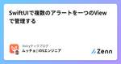

Voicyテックブログのフィード
https://zenn.dev/p/voicy
Voicyのテックブログへようこそ。ここでは、我々が日々取り組んでいる技術的な挑戦、新しいプロジェクト、革新的な研究について深く掘り下げます。我々の専門知識を共有し、産業の未来を形成するアイデアを広めることが目的です。
フィード

SwiftUIで複数のアラートを一つのViewで管理する
Voicyテックブログのフィード
はじめにSwiftUIで複数のタイプのアラートを実装する場面はよくありますが、このようにアラートを実装するとうまく動作しません。struct ContentView: View { @State private var showInfoAlert = false @State private var showWarningAlert = false var body: some View { VStack { Button("情報アラート") { showInfoAlert = tr...
9日前
Datadog dd-trace-goが何をしているのか追ってみよう
Voicyテックブログのフィード
Datadogって？https://www.datadoghq.com/ja/インフラ監視やログ、アプリケーションのパフォーマンス分析を行うためのクラウドサービスを提供している企業とそのサービス名です。また、このようなツールを使うことで効率的なパフォーマンス改善や不具合修正を行うことができます。競合的なサービスはNew RelicやDynatraceなどでしょうか。かつては私もAWS環境にSSH接続をしてファイルをgrepしたりlessしたりtailしたりでログを追っていましたが、Voicyのようにk8sを使っていて、アプリケーションがたくさんのpodにいるようなサービスで...
11日前

Alistair CockburnさんのHexagonal architectureを読んで
Voicyテックブログのフィード
この記事はAlistair CockburnさんのHexagonal architectureを読んだので、特に印象に残った点を引用しながら書いていきます。https://alistair.cockburn.us/hexagonal-architecture/ Alistair Cockburnさんはアジャイルソフトウェア開発宣言を考えたエンジニアの一人です。読み方はカタカナだとアリスターコーバーンが近いでしょうか。Crystalという開発手法を考えたり、振り返り手法の一つであるKPTの生みの親とも言われたりしています。CrystalはXPやScrumほど現在の日本で...
1ヶ月前
Swift: print()は #if DEBUGで囲むべきか
Voicyテックブログのフィード
print()はパフォーマンスに影響するのか？Swiftにおいて何かデバッグ用の情報を出力するためにprint statementを使うことはとても頻繁にありますが、print("Hello World!")と書く人と#if DEBUGprint("Hello World!")#endifと書く人がいます。printは開発中にのみ必要なものなので、リリースされたアプリのビルドの中では不要な処理です。なので#if DEBUGで囲むことによってリリース用の処理から外すのは合理的と言えるでしょう。もしprint処理がパフォーマンスに少しでも影響するなら、リリース用のアプリか...
1ヶ月前
Go Conferenceに初めて参加しました
Voicyテックブログのフィード
Voicyでバックエンドエンジニアをしているmasaです。昨日(2024/6/8)、AbemaTowersで開催されたGo Conferenceに参加したのでその感想などを記事にしてみようと思います！ 参加までの過程私はVoicyに入社するまでGoを実務としては使ったことがなく、Go Conferenceの存在自体は認知していたものの「興味はあるけどGo使ってないし参加まではしなくていいかなぁ」という気持ちで参加を見送っていたのですが、今年からは実務でもGoを使うようになり、関心度が今まで以上に増していたため参加してしてみようと思いました！connpassで事前に参加申し込みを...
2ヶ月前
Xcodeプロジェクトで環境変数を設定し、読み込む方法
Voicyテックブログのフィード
Xcodeプロジェクトで環境変数を設定し、読み込む方法この記事では、Xcodeプロジェクトで環境変数を設定し、それらをAppDelegateで読み込む方法について説明します。xcconfigファイルやXcode Cloudでの環境変数設定を利用して、プロジェクトのビルドや実行時に適切な環境変数を使用する方法を紹介します。 環境変数の設定まず、環境変数をxcconfigファイルおよびXcode Cloudで設定する方法を見ていきます。 1. xcconfig ファイルの設定xcconfigファイルはビルド設定を定義するためのファイルです。以下に例を示します。Debug....
2ヶ月前
ケント・ベックさんのImplementation Patternsを読んだ読書感想文
Voicyテックブログのフィード
ケント・ベックさんとはケント・ベックさんはアジャイルソフトウェア開発宣言を考えたエンジニアのなかのひとりで、テスト駆動開発(TDD)やエクストリームプログラミング(XP)で有名な方です。ほかには、超著名なテストフレームワークであるJUnitの開発者としても知られています。私はJUnitを利用した経験がありませんが、その影響を受けて開発されたPHPUnitを使った経験はあります。現代のソフトウェア開発に多大な貢献をしているお方ですね。 Implementation Patternsとはケント・ベックさんがソフトウェア開発をおこなうときに、こうしたらやりやすいんじゃないかなと...
3ヶ月前
原著のすすめ
Voicyテックブログのフィード
はじめにVoicyでバックエンドエンジニアをしているmasaです。GWに何か記事を１つでも書けたらな〜と思っていたので、Voicyに入社して以降取り組み始めた「原著を読む」ということについて記事にしてみることにしました。ぜひ読んでいただけますと幸いです。 なぜ原著を読み始めたのか？私が原著を読み始めたきっかけは、主に以下のようなものです。(エンジニアなのに)英語に対する苦手意識があって、克服したいと思っていたVoicyに入社していろんなことにチャレンジしてみたいと思っていた(2024/1にVoicyにジョインしました)社内でタイミングよく輪読会が始まったまず、...
3ヶ月前
GCPの料金削減をしたい パート2
Voicyテックブログのフィード
前回の記事では、GCPの料金内訳とその中でも特にBigQueryが占める割合に焦点を当てました。この記事では、具体的な削減措置とその結果について詳しく見ていきましょう。前回の記事で何にいくら使用しているのかが把握できました。 削減の流れ分析と方針の決定BigQueryの使用料金内訳確認BigQueryのコスト削減←今回の記事はここから定期実行頻度の見直し結果今後の改善に向けて BigQueryのコスト削減BigQueryは非常に強力なデータウェアハウスサービスですが、使い方によってはコストが膨らむこともあります。私たちは、GCPの料金の大部分をBigQuery...
4ヶ月前
ホワイトボードOAuth: 本人、代理人、委任状から成り立つ操作の代行
Voicyテックブログのフィード
OAuth 2.0の世界観を5分で伝えるためにOAuth 2.0を知らない同僚に、5分で紹介するとしたら何を話せばいいか。「RFC 6749ではこういった用語やこういった流れが定義されてますよ」という風に説明しても興味を持ってもらえないだろうと筆者は思います。この記事ではRFC 6749をはじめとする公式の文献にあえて触れずに、口頭でも説明しやすい形でOAuth 2.0のあらすじを紹介していきます。 最初の一言OAuth 2.0がサポートされているサービスでは、ユーザー本人から委任状をもらった代理人は、サービス内でユーザーに代わって操作を代行することができる。とい...
4ヶ月前
GCPの料金削減をしたい
Voicyテックブログのフィード
はじめにGoogle Cloud Platform（GCP）はその柔軟性、スケーラビリティ、強力なクラウドサービスのラインナップで、企業や開発者から高い支持を受けています。しかし、少しの油断で予想外の高額請求に直面することもあります。多くの人がGCPの料金に関して、何百万円もの損失を経験した話を聞いたことがあるでしょう。今回はVoicyで行ったコスト削減の取り組みについて紹介します。 削減の流れ分析と方針の決定BigQueryの使用料金内訳確認←今回の記事はここまでBigQueryのコスト削減定期実行頻度の見直しコストのアラートと上限設定結果今後の改善に向けて...
5ヶ月前
Databaseのことを考えずにiOSアプリを作る。ローカルデータベースのアーキテクチャ設計 - Realm, CoreData
Voicyテックブログのフィード
登壇時に使用したスライドはこちら！https://speakerdeck.com/musayazuju/databasenokotowokao-ezuniiosapuriwozuo-ru-rokarudetabesuwoshi-utokino-akitekutiyashe-ji はじめにRealmやCoreData, SwiftDataなどをローカルのデータベースとして使う際に苦労したことありませんか？どんな要素が開発者を苦労させるのか、まずはRealmやCoreDataなどのローカルデータベースを使う上で発生する問題を考えます。 データベースを使うとなぜ開発が難しくなるのか...
5ヶ月前
スクラムガイドを読んでスクラム開発の理解を深める
Voicyテックブログのフィード
はじめにスクラム開発は11の異なるソフトウェア会社でCTO/CEOを務めた経験のあるJeff Sutherlandと、30年以上のソフトウェア開発業界での経験があるKen Schwaberによって1990年代前半に共同開発されました。スクラム開発は公式から"スクラムガイド"という詳細なガイドラインが出ており、30ヶ国語以上に翻訳されていて日本語のバージョンも公開されています。本記事ではスクラムガイドを要約をしました。スクラムガイドを読んだことがある人の復習になったり、読んだことのない人の全体的な理解の助けになればと思います。日本語版ではなく英語版をもとにこの要約を作成したので...
5ヶ月前
Angularの新機能を触ってみようハンズオン
Voicyテックブログのフィード
この記事は、「Startup Angular #7 LT会&新しいAngularで始めよう！」のイベントのハンズオンで使用するものです。 ハンズオンの目的このハンズオンの目的は、最近のAngularリリース(v17まで)に含まれる新機能を触ってみることで、よりAngularというフレームワークに興味を持ってもらうことです。 ハンズオンの全体像このハンズオンは、次の構成で進めていきます。時間内容10分はじめに&環境構築5分コンポーネントを知ろう10分Control FlowでTodoリストを作ってみよう5分Signa...
6ヶ月前
Xcodeの左のバー(Navigator Area)の選択されたタブが勝手に変わるのを防ぐ方法
Voicyテックブログのフィード
はじめにXcodeでビルドをする時に左のside bar(Navigator Area)が勝手にエラータブ(Issue Navigator)に切り替わったり、testを実行すると勝手にテストタブ(Test Navigator)に切り替わって、それが作業の邪魔になる時があります。簡単に無効化できるので、方法紹介します。 解決方法Xcode -> Settings-> Behaviorsチェックが入っている箇所には何かしらの自動アクションが設定されているので、外したいものは外しましょう。 おわりに逆に何かの操作（ビルド、テスト、ランなど）を行なった時に...
6ヶ月前
フロントエンドアプリを画面駆動で考えて本当によかったのか: フロントエンドとバックエンドはそんなに違わない
Voicyテックブログのフィード
アプリエンジニアの同僚からよく、「アプリって画面が中心なんだよね」との声を聞く。筆者にはそれだと、画面と画面を繋ぐ一貫性を持った何かしらのテーマを見逃しているように思えるので、この記事で考えを説明していきたいと思います。 アプリの存在意義を考えるアプリの存在意義を考えてみると、エンジニアは目的もなくただ漠然とUIを作っているわけではないということが分かります。エンジニアがアプリを作るのには目的があって、その目的とはユーザーがやりたかったことを実現してあげることになります。ユーザーがやりたかったことの実現（ユースケース）は画面に言及しなくても語れるのに対し、画面はその流れをグラフィ...
7ヶ月前
ABD読書会を行ってみて
Voicyテックブログのフィード
この記事は、Voicy Advent Calendar 2023の記事です。 はじめにアクティブ・ブック・ダイアローグ（ABD読書会）は、事前準備が不要な新しい形式の読書会です。このワークショップ形式では、グループ内で1冊の本を分割し、それぞれが要約を行います。要約した内容は、その場で発表され、参加者は本の内容について活発に議論します。この方法により、様々な視点に触れ、能動的な学びが促されます。 進行方法の説明ABD読書会では、事前準備なしに当日に本を分担し読むスタイルを採用しています。参加者は読んだ箇所の要約と考察を共有し、4～5人のグループで深い議論を行います。このスタ...
8ヶ月前
OpenAPI Generatorのtypescript-fetchで型定義を自動生成してAngularで使う
Voicyテックブログのフィード
!本記事はVoicy Advent Calendar 2023の10日目の記事です。 はじめにこの記事では、OpenAPI Generatorのtypescript-fetchで型定義を自動生成してAngularで使う方法を試したので紹介します。この方法は、Voicyのプロダクトにも一部導入されているので、改めて自分で試してみてまとめました。 OpenAPI Generatorのtypescript-fetchOpenAPIからTypeScriptの型定義を自動生成するには、複数のライブラリが選択肢として挙げられますが、今回はOpenAPI Generatorのtypes...
8ヶ月前
Angular ESLintの導入と推しルール6選(2023)
Voicyテックブログのフィード
!本記事はAngular Advent Calendar 2023の16日目の記事です。 はじめに今回は、Angular ESLintの導入と推しルール6選について紹介します。 Angular ESLintとはAngular ESLintは、ESLintでAngularプロジェクトをlintするための便利なルールがまとまっているライブラリです。https://github.com/angular-eslint/angular-eslint Angular ESLintができた経緯ESLintは2023年現在、JavaScriptのリンター、静的解析ツールとして広く...
8ヶ月前
エンジニアリングマネージャーは組織を成長させるために心理学に行き着く？
Voicyテックブログのフィード
なぜ心理学に行き着くのか？エンジニアリングマネージャーとしての道は、技術と人々の管理という二つの重要な要素を要求します。技術的なスキルは明らかに重要ですが、組織の成長を真に促進するためには、チームメンバーの心理を理解し、それに応じたアプローチを取る必要があります。ここで、心理学の役割がクローズアップされます。 チーム相互作用の理解エンジニアリングチームでは、個々のメンバーの行動や相互作用が全体のパフォーマンスに大きく影響します。心理学は、チームメンバーがどのように情報を処理し、意思決定を行うか、また彼らがストレスや圧力にどう反応するかを理解するのに役立ちます。この理解は、コミ...
8ヶ月前